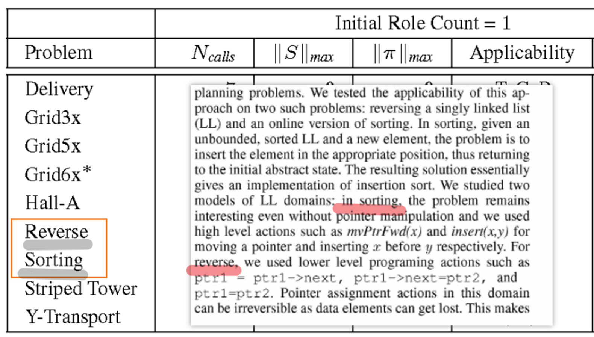
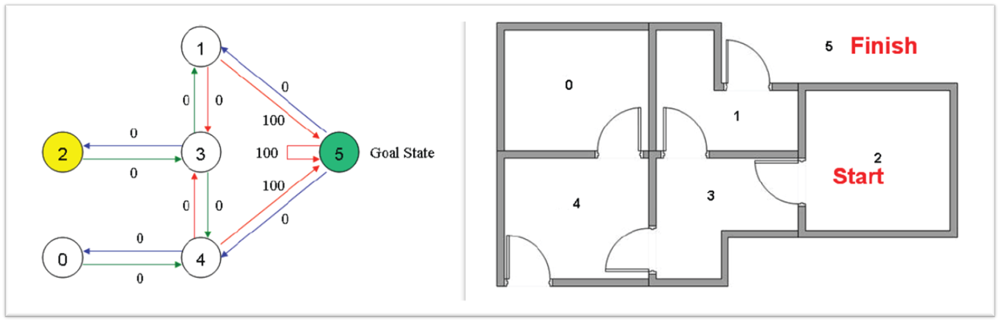

QNP 到 AST 再到程序生成¶
一个QNP（Qualitative Numeric Planning）问题本质上构成一个AOV网络（Activity-on-Vertex Network），类似于迁移系统（Transition System），其策略（Policy）定义了从状态到动作的映射关系。这一范式与图灵机模型在算法表示层面具有结构上的相似性。
模型检测（Model Checking）试图以诸如ATL*（Alternating-time Temporal Logic）之类的逻辑语言来描述此类系统。然而在实际研究中，大量文献采用FOND（Fully Observable Non-Deterministic）框架进行建模，其原因在于FOND相对易于处理。尽管如此，或许有必要探索一种全新的逻辑体系以更精准地刻画QNP问题的本质特性。
1. QNP 定义¶
domain.pddl
problem_p.pddl
2. 求解器与规划框架¶
2.1 MyND 类规划器及其改进型 GraphPlanner¶
MyND 规划器及其改进型的图规划器（GraphPlanner）可用于求解 QNP 问题。
2.2 解图（Solution Graph）——数据流控制图（Data Flow Controller Chart）¶
规划解可以表示为解图（Solution Graph）的形式，其结构类似于数据流控制图。
2.3 抽象语法树（AST）¶
解图可进一步转化为抽象语法树（Abstract Syntax Tree, AST），以便进行结构化分析与程序生成。
2.4 程序生成（Program）¶
基于AST可生成可执行程序，实现从规划到代码的端到端转换。
3. QNP 原始论文与扩展领域¶
阅读QNP原始论文可发现，LL领域规划问题与链表程序问题（Linked List Program Problem）之间存在对应关系。
扩展LL领域（Extended LL Domain）：

4. 程序生成技术路线¶
4.1 命令式编程语言路线¶
通过解析树（Parser Tree）生成LLVM中间表示（IR），进而翻译为C风格程序。
C++、Java等模板元编程技术，生成器（Generator）
4.2 函数式编程语言路线¶
利用Coq的Extraction机制，可将函数式问题提取为OCAML或HASKELL代码。此外，Why工具亦可用于辅助程序验证。
5. 类型检查与有效性分析¶
依据编译原理的相关知识，在对解析器（Parser）生成的抽象语法树（AST）进行处理时，需进行"类型检查"与"有效性分析"。当前学术界已存在针对程序终止性进行判定与测试的软件工具。
可借鉴IC3 / nuSMV等形式化验证领域的技术，对包含分支与循环的程序进行形式化验证与终止性分析。
6. 研究方向分支¶
6.1 强化学习与规划环境的交互¶
PDDLGym项目构建了强化学习求解器与规划环境之间的交互通信范式。类似地，是否可以构建 QNPGym？其核心目标可概括为：在AOV网络中寻找一条可行的路径。

马尔可夫过程具有无记忆性（Memoryless Property），即状态到动作的映射关系（state → action）。现有文献已实现具有记忆能力的轨迹到动作映射（trajectory → action），其中记忆变量对应QNP中的数值变量。代表性工作如《Reinforcement Learning with Non-Markovian Rewards》。
近年来，将深度学习方法应用于规划问题求解已成为一个重要的研究方向，详见 ICAPS 2020 PRL Workshop。
相关重要文献包括： - Generalize Planning with Deep Reinforcement Learning - Symbolic Plans as High-Level Instructions for Reinforcement Learning - Learning Neural Search Policies for Classical Planning
此外，从概率推理角度理解强化学习与控制的讨论可参考知乎专栏文章：从概率推理的角度理解强化学习和控制(一）。
学术界曾普遍认为确定性策略的强化学习（Deterministic Policy RL）并不存在，直至2014年Silver等人在《Deterministic Policy Gradient Algorithm》中提出确定性策略梯度方法。2015年，DeepMind将深度Q网络（DQN）与确定性策略梯度相结合，提出了DDPG算法（Continuous Control with Deep Reinforcement Learning）。
6.2 定理证明与模型检测¶
Isabelle / Coq辅助定理证明系统可通过"推理"手段判定程序终止性，结合模型检测（Model Checking）技术，构建软件系统可信性验证框架。
6.3 逻辑公式与程序生成¶
- 逻辑公式演算与谓词逻辑天然形成类似Golog的逻辑式命令式程序，运行于Prolog推理引擎之上。
- 逻辑公式演算亦天然适用于生成OCAML等函数式编程语言，这方面的具体实现包括Coq的Extraction机制。
- 领域特定语言（DSL）可借助编译原理前端的"语法分析与词法分析"形成中间表示，进而通过AST等价转换为C风格程序（此方向目前尚缺乏公开的学术论文加以探索）。